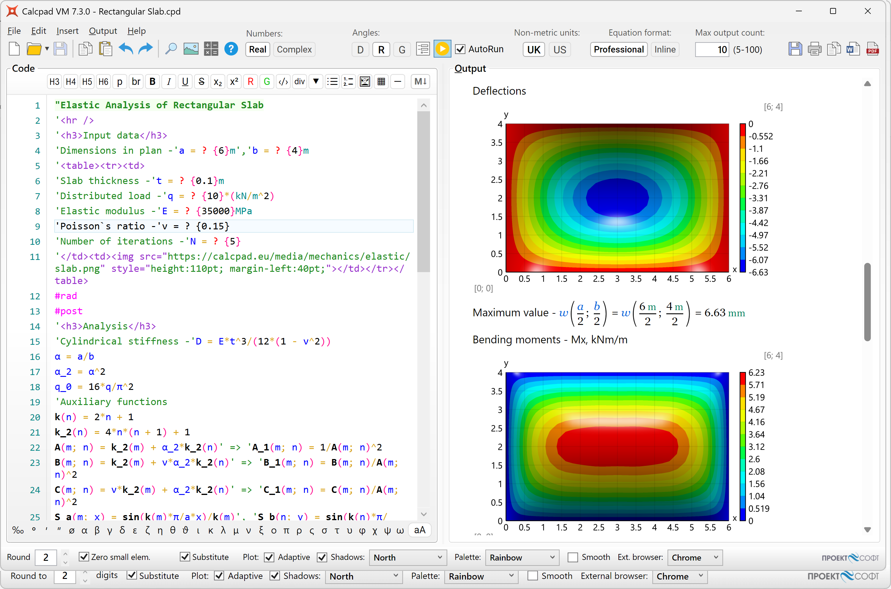
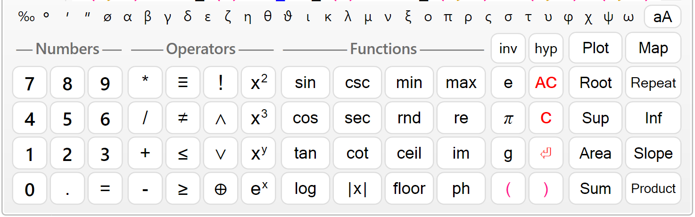
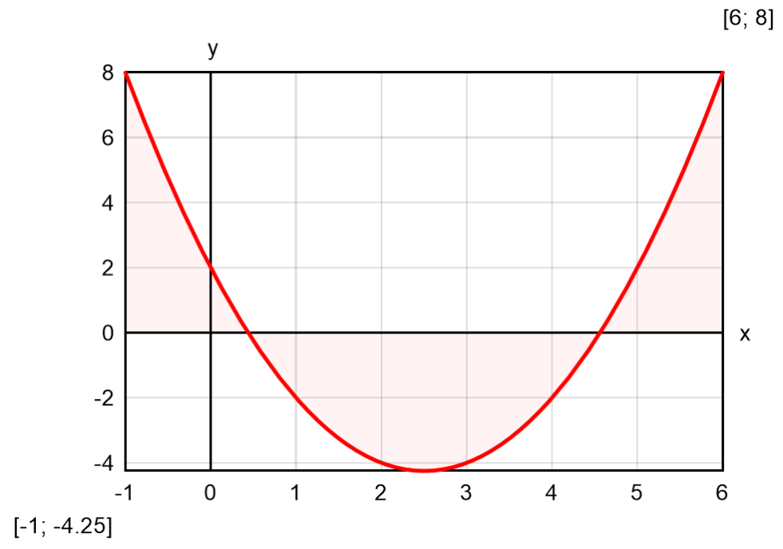
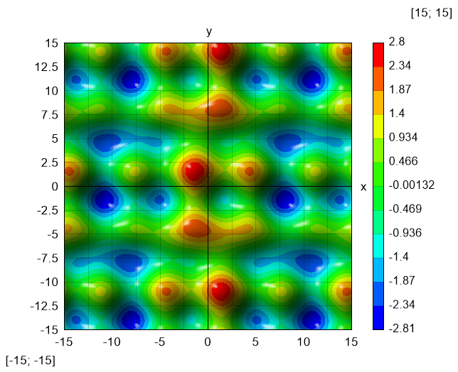
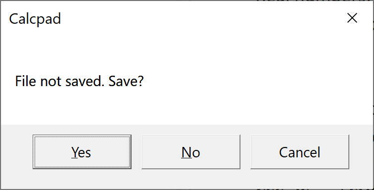

®
®- 34-36 Peyo Yavorov blvd, Sofia 1164, Bulgaria
- +359 2 423 4455
- proektsoft.bg@gmail.com
 Calcpad
Calcpad
Version 5.6.2 Readme!
About Calcpad
Calcpad is free software for mathematical and engineering calculations. It represents a flexible and modern programmable calculator with Html report generator. It is simple and easy to use, but it also includes many advanced features:
- real and complex numbers;
- units of measurement (SI, Imperial and USCS);
- custom variables;
- built-in library with common math functions;
- custom functions of multiple parameters f(x; y; z; …);
- powerful numerical methods for root and extremum finding, numerical integration and differentiation;
- finite sum, product and iteration procedures;
- program flow control with conditions and loops;
- "titles" and 'text' comments in quotes;
- support for Html and CSS in comments for rich formatting;
- function plotting, images, tables, parametric SVG drawings, etc.;
- automatic generation of Html forms for data input;
- professional looking Html reports for viewing printing;
- variable substitution and smart rounding of numbers;
- output visibility control and content folding;
- support for plain text (*.txt, *.cpd) and binary (*.cpdz) file formats.
This software is developed using the C# programming language and latest computer technologies. It automatically parses the input, substitutes the variables, calculates the expressions and displays the output. All results are sent to a professional looking Html report for viewing and printing. Acknowledgments: The new and beautiful icons are created using icons8.com. The pdf export was made possible thanks to the wkhtmltopdf.org project.
.
Fields of application
This software is suitable for engineers and other professionals that need to perform repetitive calculations and present them in official documentation such as calculation notes. They can automate this task efficiently by creating powerful and reliable Calcpad worksheets. It can also help teachers to prepare calculation examples, papers, manuals, books etc. Students can use it to solve various problems, prepare homeworks, phd theses etc.
Installation
Installation is performed by the automated setup program calcpad-setup-en-x64.exe. Follow the instruction of the setup wizard. The software requires a 64 bit computer with Windows 10 and Microsoft .NET 6.0.
Licensing and terms of use
This software is free for both commercial and non-commercial use. It is distributed under the MIT license:
Copyright © 2021 PROEKTSOFT EOOD®
Permission is hereby granted, free of charge, to any person obtaining a copy of this software and associated documentation files (the "Software"), to deal in the Software without restriction, including without limitation the rights to use, copy, modify, merge, publish, distribute, sublicense, and/or sell copies of the Software, and to permit persons to whom the Software is furnished to do so, subject to the following conditions:
The above copyright notice and this permission notice shall be included in all copies or substantial portions of the Software.
THE SOFTWARE IS PROVIDED "AS IS", WITHOUT WARRANTY OF ANY KIND, EXPRESS OR IMPLIED, INCLUDING BUT NOT LIMITED TO THE WARRANTIES OF MERCHANTABILITY, FITNESS FOR A PARTICULAR PURPOSE AND NONINFRINGEMENT. IN NO EVENT SHALL THE AUTHORS OR COPYRIGHT HOLDERS BE LIABLE FOR ANY CLAIM, DAMAGES OR OTHER LIABILITY, WHETHER IN AN ACTION OF CONTRACT, TORT OR OTHERWISE, ARISING FROM, OUT OF OR IN CONNECTION WITH THE SOFTWARE OR THE USE OR OTHER DEALINGS IN THE SOFTWARE.
The source code is available on our SourceForge repository:
https://sourceforge.net/p/calyx/code/ci/master/tree/
Any scripts, developed with Calcpad are property of the respective authors. They can be used without additional limitations except those appointed by the authors themselves.
How it works
The software is quick and easy to use. Just follow these simple steps:
- Enter text and formulas into the "Code" box on the left.
- Click
 to calculate. Results will appear in the "Output" box on the right as a professionally formatted Html report.
to calculate. Results will appear in the "Output" box on the right as a professionally formatted Html report. - Click
 to print or to copy the output.
to print or to copy the output.
You can also export it to Html , PDF or MS Word document.
document.
The program can be used in two different modes:
- Calculator - the source code is available for editing in the left box. After calculations, the results are displayed into the right box. This mode is suitable for short ans simple problems without complex formatting.
- Input Form - the source code is not accessible. Instead, an Html input form is displayed. It contains input fields for all parameters, required for the calculations. The remaining content is locked for editing. This mode is more convenient for complex problems with rich formatting, that are frequently used. It makes clear which are the required input parameters and protects the source code from accidental damage.
In "Input Form" mode, you need to fill the input data and click the  button. You can create such a from very easy, directly out of the source code. Just put the "?" symbol wherever you need to enter a value. Then save the problem as "*.cpd" file. You can find additional information about forms further in this manual.
button. You can create such a from very easy, directly out of the source code. Just put the "?" symbol wherever you need to enter a value. Then save the problem as "*.cpd" file. You can find additional information about forms further in this manual.
Theoretical basis
(you can skip this if you find it boring)
How does Calcpad actually work? There is a sophisticated math parser inside, that does most of the job. First, the source code is scanned and the sequence of bytes is converted into a list of tokens, using lexical analysis. Each token is represented by data and type (purpose, role).
Then the parser checks if all tokens are in the correct order. We need to know if the expression is mathematically correct and can be computed. Otherwise, a comprehensible error message should be generated. For example, "3 + a / 5" is a correct expression and "3 a + / 5" is not. For that purpose, the standard mathematical notation is represented by a formal language with context-free grammar and syntax analysis is used.
Arithmetic expressions are usually written in infix notation. It means that each operator is located between the respective operands (e.g. "5*3 + 2"). The problem is that, unlike humans, computers are difficult to understand such expressions. The main problems are the operator precedence and the use of brackets. For example, the above expression makes "17", while "5*(3 + 2)" makes "25". That is why, the expression is converted into different type of notation, called "postfix" or Reverse Polish Notation (RPN). It is very easy for a computer to read this one. For example, the expression "5*(3 + 2)" is written in RPN as "5 3 2 + *". The main advantage is that the order of operations can be clearly specified without the need of brackets.
There is a simple and powerful algorithm for evaluation of expressions, written in reverse polish notation (RPN). It is used by almost all calculators. However, Calcpad includes additional complex programming functionality for managing parameters, functions, conditional execution, etc.
This was a brief and simple explanation. If you are more curious about these topic, you can find additional information in specialized books, papers or websites. Wikipedia is a good place to start with:
https://en.wikipedia.org/wiki/Parsing
https://en.wikipedia.org/wiki/Lexical_analysis
https://en.wikipedia.org/wiki/Context-free_grammar
https://en.wikipedia.org/wiki/Shunting-yard_algorithm
https://en.wikipedia.org/wiki/Reverse_Polish_notation
Writing code
Enter the code into the "Code" input window. Spacing and indent are maintained automatically. You can use the computer keyboard or the "Numeric Keypad" below. You can copy text from and to the input window or any external program (e.g. Word). There is a toolbar above the input window with some useful editing commands: Copy, Paste, Undo, Redo and Insert Image.
The source code is logically divided into lines, which are numbered automatically. Each expression should be on a separate line. By exception, it is possible to have several expressions on the same line, but they must be separated by comments. When you finish the line, press "Enter" to start a new line. Syntax highlighting is performed automatically. Different code elements are displayed with different colors depending on their type. For example, comments are colored in green and errors are colored in red. All comments must be enclosed in quotes. They can include both plain text and Html. You can use Html to add pictures, tables and format the report.
Numeric Keypad

The numeric keypad is useful when you work on a tablet or laptop with touch screen. When you press a button, the respective symbols are inserted at the place of the cursor. The keypad is separated into four sections: "Numbers", "Operators", "Functions" and "Other". The "=" key does not calculate the answer as on simple calculators. This is the assignment operator (e.g. "a = 4"). If you need to check the equality of two numbers, use the "≡" operator (for example, "a ≡ b" means: "Is a equal to b?"). The "e", "π" and "g" keys insert the respective built-in constants e ≈ 2.7183, π ≈ 3.1416 and g ≈ 9.8066.
If you don't need the keypad and want to free some space, you can hide it with the  button. Click again to show the keypad back.
button. Click again to show the keypad back.
The "C" button deletes the previous symbol and "AC" deletes a whole line. If you double click this button, you will clear the whole text. If you have done this accidentally, you can use Undo to restore.
Moving inside the text
Writing and editing text in Calcpad is not much different than any other Windows program. If you have some experience in that, you can skip this and go straight to "Expressions".
You can type at arbitrary position inside the text. The place where symbols are inserted is called "text cursor" (the blinking vertical line "|"). You can change the cursor position by clicking with the mouse or using the arrows "← → ↑ ↓" from the keyboard. Arrows will move the cursor one symbol left or right and one line up or down. If you hold the "Ctrl" key and press an arrow, the cursor will move with a whole word. "Home" and "End" keys will send you to the beginning or the end of the current line, respectively. If you hold "Ctrl" beforehand, you will go to the beginning or the end of the entire text.
Selecting text
Most editing commands require you to select some text to which the command will be applied. The selected text is usually displayed with blue background (it may look different depending on your system settings). You can select text with the mouse as follows: Press the left mouse button at the start position of the text to be selected. Hold the button and move the mouse to the end position. Then release the button. Alternatively, you can click at the start, press Shift and then click at the end. You can also use the computer keyboard. Hold Shift and press arrows or "Home", "End", "PageUp", "PageDown".
Deleting text
You can delete a single symbol by pressing the "Delete" ("Del") or "Backspace" ("Bkspc") keys. The difference is that "Delete" removes the symbol after the cursor, and "Backspace" - before the cursor. If you hold "Ctrl" beforehand, you can delete a whole words instead of separate symbols. If you need to delete a larger part of the text, you can select it and press either "Delete" or "Backspace" after that.
Copy
If some part of the text is repeated, you can copy it instead of typing it again. That requires two steps: "Copy" and "Paste". At the first step (Copy), the selected text is sent to memory called Clipboard. At the second step (Paste), the text is inserted at the new places. Once copied, you can paste the text at multiple places.
You can copy the selected text to the Clipboard by pressing "Ctrl+C" or by clicking the button.
Paste
Before you paste a text from the Clipboard you have to position the cursor at the required place. Then press "Ctrl+V" or the  button. You can copy text from Calcpad and paste it to other programs and vice-versa. For example, you can take some formulas from Word, calculate them in Calcpad and return the results back to Word.
button. You can copy text from Calcpad and paste it to other programs and vice-versa. For example, you can take some formulas from Word, calculate them in Calcpad and return the results back to Word.
Undo
This command undoes the result from the last editing command and restores the previous state. You can undo up to 10 steps back. Just press "Ctrl+Z" or click the button.
Redo
"Redo" performs in the opposite way to "Undo". It restores a command that has been undone. Redo must follow immediately the last Undo. If you enter or edit some text meanwhile, you will lose the ability to redo. Click the  button to redo.
button to redo.
Find
You can search for a certain text inside the code. Select the "Edit/Find" menu or press "Ctrl+F" and enter a phrase to search for. The programs starts from the current position down to the end. If the searched phrase is found, it is selected and the procedure is stopped. Press "F3" or click the "Edit/Find Next" menu to resume with the same phrase. If the program reaches the end of the text, it will prompt you to continue from the beginning.
Using Notepad++
Notepad++ is a popular text/code editor. It is free and open source and can be downloaded from the official website https://notepad-plus-plus.org. It supports many programming or scripting languages. Its text editing capabilities are much more powerful than Calcpad. It is also very useful for writing Html code. Calcpad syntax can be also used with Notepad++. It is predefined as an XML file that can be inserted in Notepad++. You can do this by selecting the "Language" menu, then click "Define your language" and then, "Import…". Find the Calcpad folder inside your Program Files directory or wherever Calcpad is installed and select the file named Notepad++.xml.
Expressions
The main purpose of Calcpad is to perform calculations. That is why, everything inside the input window is assumed to be mathematical expressions, unless it is enclosed in quotes. Then it is treated as comments. By default, each expression has to be in a separate line, e.g.:
2 + 35*(3+1)15/2
You must not add "=" at the end of each expression. This is the assignment operator. It is used to assign values to variables, e.g. "a = 2". Press the  button, to see the results in the output window:
button, to see the results in the output window:
2 + 3 = 55∙(3 + 1) = 2015/2 = 7.5
Alternatively, you can have several expressions in a single line, but they must be separated by comments, e.g.:
'Length -'a = 3m', Width -'b = 2*a', Height -'c = 5m
Each expression can include constants (numbers), variables, operators, functions and brackets. They must be arranged properly in order to represent a valid expression. The commonly accepted mathematical notation and operator precedence is used as it is taught in school. Detailed description of the expression components is provided bellow.
You can calculate separate unrelated expressions as with simple calculator or write a complete program that solves a specific problem. You can define variables and assign values to them. Further, you can use them to define other variables and so on until you reach the final result. You can also add text, Html and images to create detailed and professional-looking calculation report. You can save it to a file and use it multiple times to solve similar problems. Bellow, you can see a sample program for solving a quadratic equation:
Constants
Real
Real constants can be positive and negative integer and decimal numbers. They can include digits "0" - "9" and decimal point ".". You can also enter numbers as fractions like "3/4". However, the program will treat them as expressions (division of two numbers). You cannot define numbers in floating point format: "3.4e+6". You have to use an expression like "3.4*10^6" instead.
All constants and variables are internally stored as "double-precision floating point" numbers. Their values are ranged from -1.7976931348623157E+308 to 1.7976931348623157E+308. If a result is out of the above interval, the program returns "-∞" or "+∞, respectively". Division by zero gives the same result, but "0/0" = "Undefined". The smallest positive number is 4.94065645841247E-324. Smaller values are rounded exactly to 0.
Complex
If you select "Complex" mode, you can use complex numbers in calculations. Otherwise, only real arithmetic is applied. Each complex number is represented by the ordered couple (a; b), where "a" is real number, and "b = |b|i" is called "imaginary". It can be written in so called algebraic form: ±a ± bi (e.g. "2 + 3i"). You can also use other forms, such as polar or exponential from, by entering the respective expressions. In Calcpad, the imaginary unit can be entered either as "i" or "1i" in case you have a variable named "i". The imaginary unit is a special number that satisfies the expression i 2 = -1.
Variables
A variable is defined by its name and value using expressions like "a = 4". The "=" symbol is the assignment operator. On the left side, only a single variable name is allowed. On the right side, you can have any valid mathematical expression, e.g. "b = a + 4". A variable "lives" from the place of its definition to the end of the program. That is why you cannot use a variable before it is defined. This will raise an error. If you redefine an existing variable with a new value, it will replace the old one and the new value will be used further on.
Variable names can include small or capital Latin letters "a" - "z", "A" - "Z", Greek letters "α" - "ω", "Α" - "Ω" and digits. Names are case sensitive. For example "a" and "A" are different variables. A name must start with a letter. You can also use "," (comma), "_" (underscore) and prime symbols: " ′ ", " ″ ", " ‴ ", " ⁗ ". The first occurrence of an underscore in a name starts a subscript. For example, "a_1_1" will be formatted as "a1_1". Variables can store either real or complex numbers (in "Complex" mode).
Operators
The following operators are supported by the Calcpad language:
- Arithmetic:
- "!" - factorial;
- "^" - exponentiation;
- "/" - floating point division;
- "\" - integer division;
- "÷" - division bar;
- "%" - division remainder;
- "*" - multiplication;
- "-" - subtraction;
- "+" - addition;
- Relational (comparison):
- "≡" - equal to;
- "≠" - unequal to;
- "<" - less then;
- ">" - greater than;
- "≤" - less or equal;
- "≥" - greater or equal;
- "=" - assignment.
Operator precedence and associativity
The above operators are listed in the order of their precedence. This is the order they will be evaluated in an expression. When you have different types of operators in a single expression, exponentiation will be evaluated first, then division and multiplication, subtraction and addition and comparison will be the last. All relational operators are of equal precedence. If you need to change the order of evaluation, you can use brackets. For example, "5 + 2∙3" makes "11". If the addition have to be first, write "(5 + 2)∙3". You will get "7∙3 = 21". Operators with equal precedence are evaluated from left to right. This is called operator associativity. For example, "3 - 2 + 1" makes "(3 - 2) + 1 = 2" and not "3 - (2 + 1) = 0". Another good example is "2∙3 / 2∙3", which makes "9" and not "1".
All operators in Calcpad are left-associative (calculations are performed from left to right). The only exception is exponentiation, which is right-associative. It is performed from right to left, which means that x^a^b will be evaluated as xab. However, many hand calculators and spreadsheet software like Excel use left associativity for exponentiation. In this case x^a^b will be evaluated as xa·b. If you need to have xab, you will have to add brackets: x^(a^b).
Relational and boolean expressions
Relational operators can return only two values: "1" for "true" and "0" for "false". You can use them in expressions along with arithmetic operators. For example, you can get the greater of two numbers a and b by the expression: "a*(a ≥ b) + b*(a < b)". But you need to be careful. If you use "≤" instead of "<", for the case of a equal to b, you will get a + b, which may be not exactly what you want. For that special purpose, it is better to use the built-in function max(a; b) or conditional execution (look further in this manual). You can also simulate boolean algebra with arithmetic expressions. In this case, you can use "*" instead of logical "AND" and "+" for logical "OR". For example, "(2 < 3) + (2 < 1) = 1 + 0 = 1" (true) and (2 < 3)∙(2 < 1) = 1∙0 = 0 (false). Again, you must be careful. This is not true boolean algebra and some expressions may evaluate to other results than 0 and 1. It depends on you to properly compose the expression and interpret the results. Also, make sure to put brackets when and where they are required. Arithmetic operators are of higher precedence than relational.
Complex arithmetic
All operators support complex numbers except for factorial "!", integer division "\", reminder "%" and comparison: "<", "≤", ">", "≥". The evaluation of a complex expression is a little bit more difficult than real. The rules for the basic complex operations are given bellow:
- Addition:
(a + bi) + (c + di) = (a + c) + (b + d)i; - Subtraction:
(a + bi) − (c + di) = (a − c) + (b − d)i; - Multiplication:
(a + bi)·(c + di) = (ac − bd) + (bc + ad)i; - Division:
(a + bi)/(c + di) = (ac + bd)/(c2 + d2) + (bc − ad)/(c2 + d2)i;
Brackets
Brackets are used in two cases: to change the order of calculations and to enclose arguments of functions. Only round brackets are allowed: "(" and ")". The software checks if the following rules are satisfied for each expression:
- The first bracket in an expression must be a left one;
- The count of left and right brackets must be equal;
- Only operator or function identifier are allowed before a left bracket;
- Right bracket is not allowed after operator or function identifier;
- A function identifier always must be followed by a left bracket.
Calcpad uses "smart" bracket insertion while rendering the output. It means that brackets, which are duplicate or do not affect the order of calculations, are omitted from the output. On the other hand, there are places where brackets are added for clarity, although not required in the input. It happens mostly when negative or complex variables are substituted. For example:
- If a = -2, then a2 = (-2)2 = 4, and not a2 = -22. The second case is ambiguous and the sign can be applied after the exponentiation which will evaluate to -4. Also, brackets are added to exponentiation of a complex variable;
- If a = -2, then b = -a = -(-2) = 2, and not b = -a = --2 = 2;
- Brackets are also added in the case of multiplication and division to a negative variable: a·b = -2·(-3) = 6;
- Brackets are required almost every time we have to substitute complex variables: a·b = (2 + 3i)·(3 - 2i) = 12 + 5i.
Functions
Library (built-in) functions
Calcpad includes a library with common math functions, ready to use:
abs(x)- absolute value (modulus) |x|;sin(x)- sine;cos(x)- cosine;tan(x)- tangent =sin(x)/cos(x), for each x ≠ kπ, k=1, 2, 3…;csc(x)- cosecant =1/sin(x), for each x ≠ kπ, k=1, 2, 3…;sec(x)- secant =1/cos(x), for each x ≠ π/2 + kπ, k=1, 2, 3…;cot(x)- cotangent =cos(x)/sin(x), for each x ≠ π/2 + kπ, k=1, 2, 3…;sinh(x)- hyperbolic sine =(ex - e-x)/2;cosh(x)- hyperbolic cosine =(ex + e-x)/2;tanh (x)- hyperbolic tangent =(ex - e-x)/(ex + e-x);csch(x)- hyperbolic cosecant =1/sinh(x);sech(x)- hyperbolic secant =1/cosh(x);coth(x)- hyperbolic cotangent =(ex + e-x)/(ex - e-x), for x ≠ 0;asin(x)- inverted sine, defined for -1 ≤ x ≤ 1;acos(x)- inverted cosine, defined for -1 ≤ x ≤ 1;atan(x)- inverted tangent;atan2(x; y)- the angle whose tangent is the quotient of y and x;acsc(x)- inverted cosecant =asin(1/x);asec(x)- inverted secant =acos(1/x);acot(x)- inverted cotangent;asinh (x)- inverted hyperbolic sine =ln(x + √x2 + 1), defined for -∞ ≤ x ≤ +∞;acosh(x)- inverted hyperbolic cosine =ln(x + √x + 1·√x - 1), defined for x ≥ 1;atanh(x)- inverted hyperbolic tangent =1/2·ln[(1 + x)/(1 - x)], for -1 < x < 1;acsch(x)- inverted hyperbolic cosecant =atanh(1/x);asech(x)- inverted hyperbolic secant =acosh(1/x);acoth(x)- inverted hyperbolic cotangent =1/2·ln[(x + 1)/(x - 1)], for |x| > 1;log(x)- decimal logarithm (with base 10), for each x > 0;ln(x)- natural logarithm (with base e ≈ 2.7183), for each x > 0;log2(x)- binary logarithm (with base 2), for each x > 0;sqr(x)orsqrt(x)- square root (√x ), defined for each x ≥ 0;cbrt(x)- cubic root ( 3√x );root(x; n)- n-th root ( n√x );round(x)- rounds to the nearest integer;floor(x)- rounds to the smaller integer;ceiling(x)- rounds to the greater integer;trunc(x)- rounds to the nearest integer towards zero;random(x)- a random number between 0 and x;min(x; y; z…)- the smallest of multiple values;max(x; y; z…)- the greatest of of multiple values;sum(x; y; z…)- sum of multiple values= x + y + z…;sumsq(x; y; z…)- sum of squares= x² + y² + z²…;srss(x; y; z…)- square root of sum of squares= sqrt(x² + y² + z²…);average(x; y; z…)- average of multiple values= (x + y + z…)/n;product(x; y; z…)- product of multiple values= x·y·z…;mean(x; y; z…)- geometric mean= n-th root(x·y·z…);if(<cond>; <value-if-true>; <value-if-false>)- if the condition cond is satisfied, the function returns the first value, otherwise it returns the second value. The condition is satisfied when it evaluates to any non-zero number;switch(<cond1>; <value1>; <cond2>; <value2>;…; <default-value>)- returns the value for which the respective condition is satisfied. Conditions are checked from left to right. If none is satisfied, it returns the default value in the end;take(n; a; b; c…)- returns the n-th element from the list;line(x; a; b; c…)- performs linear interpolation among the specified values for parameter x;spline(x; a; b; c…)- performs Hermite spline interpolation;
Arguments must be enclosed in round brackets. They can be constants, variables or any valid expression. Multiple arguments must be separated by semicolons ";". When arguments are out of range, the function returns "Undefined". Exceptions from this rule are "cot(0)" and "coth(0)", which return "+∞". Arguments of trigonometric functions can be in degrees or radians. This option is selected trough the radio buttons above the output window. Alternatively, it can be specified inside the code. You have to insert a separate line containing: #deg for degrees or #rad for radians. It will affect all expressions after the current line to the end or until the alternative directive is found. The settings specified in the source code are of higher priority than those by the radio buttons.
All functions are also defined in the complex domain, except min(x; y) and max(x; y). Rounding functions affect both real and imaginary part. There are also several functions for complex numbers only:
- re(a + bi) - returns the real part only, re(a + bi) = a;
- im(a + bi) - returns the imaginary part as a real number, im(a + bi) = b;
- abs(a + bi) - complex number modulus = sqrt(a2 + b2);
- phase(x) - complex number phase (argument) = atan2(a; b).
Custom (user defined) functions
You can define your own functions, and use them further in the calculations. Custom functions can have unlimited number of parameters. They are specified after the function name, enclosed in brackets "(" … ")" and separated by semicolons ";". Each function is defined, using the following format: "f ( x; y; z; … ) = expression", where "f" is the function name and "x", "y" and "z" are function parameters. On the right side you can have any valid expression including constants, operators, variables and even other functions, e.g.:
f(x) = x^2 + 2*x*sin(x)g(x; y) = f(x)/(y - 4)
Once defined, you can use a function in any expression by inserting a function call. Just write the function name and then specify the arguments in brackets, e. g. b = g(a + 2; 3) + 3. Function names must conform to the same rules as variable names. Arguments can be any valid expressions. You have to provide as many arguments as the number of function parameters. The life cycle of a function is from the place of definition to the end of the code. If you define a new function with the same name, the old one will be replaced. You cannot redefine a library function. For example, sin(x) = x^2 will return an error.
It is not necessary to pre-define the variables that are used for parameters. However, if other variables are used inside the function body, they must be defined before the first call to the function. Parameters work as local level variables inside the function body. If a variable with the same name exists outside the function, a call to that function will not rewrite the value of the global variable. For example:
- If you have a variable "x = 4"
- and a function "f(x) = x2".
- When you call "f(2)", it will evaluate to x2 = 22 = 4, because local x = 2
- If you call "x2" after that, it will return x2 = 42 = 16, because global x remains 4.
User defined functions support both real and complex numbers.
Plotting
Besides functions, Calcpad provides special commands for advanced operations. They accept functions and expressions as arguments and perform plotting, iterative solutions and numerical methods. Their names start with "$" to be distinguished from normal functions. Their parameters must be enclosed in curly brackets: "{" and "}". Such is the plotting command $Plot. It can plot a function of one variable in the specified interval. It has the following format:
$Plot{y(x) @ x = a : b}
, where:
- y(x) - the function to be plotted. Instead of y(x) you can put any valid expression. It will be used to calculate the ordinate values;
- x - the name of the variable along the abscissa. You can put here only a single name. It is not required to define the variable preliminary;
- a and b are the limits of the interval for the x variable. Instead of a and b you can put numbers, variables or any valid expressions.
For example, if you enter: $Plot{x^2 - 5*x + 3 @ x = -1:6}, you will get the following result:

The above command plots only one function of one variable at a time. There are also other formats that you can use:
$Plot{x(t)|y(t) @ t = a : b} - parametric plot: both coordinates are functions of a parameter;
$Plot{y1(x) & y2(x) & … @ x = a : b} - multiple: plots several functions on a single graph;
$Plot{x1(t)|y1(t) & x2(t)|y2(t) & … @ t = a : b} - multiple parametric;
$Map{f(x; y) @ x = a : b & y = c : d} - draws a 2D color map of a 3D surface, defined by f(x; y).
The $Plot{…} function must be the first thing in a line. You can have only spaces and tabs beofre, not even comments. Otherwise, the program will return an error. Any text after the closing bracket "}" will be ignored. Plotting supports only real numbers. You can use it in complex mode, only if x and y are real and the function returns real result along the plotting interval.
You can specify the size of the plot area by defining two variables: PlotWidth and PlotHeight in pixels. The default values are PlotWidth = 400 and PlotHeight = 250.
The $Map{…} function can work with different color palettes. Select the preferred one from the "Palette" combo box on the bottom of the program window. If you select the "Smooth" checkbox, the scale will be displayed as a smooth gradient. Otherwise, the program will draw color strips. You can also add 3D effects to the graph by selecting the "Shadows" checkbox. You can also specify light direction by the respective combo.
Examples of different plotting methods are provided bellow:
|
Parametric Equation: r(θ) = cos(5/2*θ)$Plot{r(θ)*cos(θ)|r(θ)*sin(θ) @ θ = 0:6*π}
|
Multiple Equation: y1(θ) = cos(θ) - sin(θ)y2(θ) = cos(θ) + sin(θ)$Plot{cos(θ) & y1(θ) & y2(θ) @ θ = 0:π}
|
|
Result: "rose" curve |
Result: leaf by three trigonometric functions
|
|
Multiple parametric Equation: x(θ) = sqr(θ)*cos(θ)y(θ) = sqr(θ)*sin(θ)$Plot{x(θ)|y(θ) & -x(θ)|-y(θ) @ θ = 0:3*π}
|
Color map Equation: f(x; y) = cos(x/3) + sin(y) - sin(x)*cos(y/4)$Map{f(x; y) @ x = -15 : 15 & y = -15 : 15}
|
|
Result: double Fermat spiral |
Result: 2D waves  |
Numerical methods
Calcpad has a built in "Solver" module, which can solve more difficult problems using numerical methods. It can work only with real numbers but not complex. It includes the following functions:
Root finding
$Root{f(x) = const @ x = a : b}
$Root{f(x) @ x = a : b}
It finds a single root for an equation of type f(x) = const within the interval [a, b]. If "const" is zero, you can omit "= const". The program uses hybrid iterative method that "brackets" the root in sufficiently small interval. If no roots exist inside the initial interval, the program will return an error. If there are several roots, it will find only one of them. In such case, it is better to plot the function first. Then, you can see the approximate location of roots and divide the interval into several parts - one for each root. Finally, you can call the function for each separate interval to find all the roots. In some cases, it is possible to develop an automated procedure for interval splitting.
Minimum
$Inf{f(x) @ x = a : b}
It finds the smallest value for a function f(x) within the specified interval [a, b]. The golden section search method is applied for that purpose. If the function contains a local minimum within the interval, it will be returned as a result. Otherwise, the function will return the smaller of the values at the ends of the interval: f(a) or f(b). If there are several local minimums, the program will return only one of them, but not necessarily the smallest one. In such cases, it is better to split the interval. The value of x where the minimum is found is stored into a variable xinf. If you use different name for the argument, instead of x, it will add "_inf" at the end of that name.
Maximum
$Sup{f(x) @ x = a : b}
It works like the minimum finding function, but it finds the greatest value instead. The value of x where the maximum is located is stored in a variable named xsup.
Numerical integration
$Area{f(x) @ x = a : b}
It calculates the value of the definite integral of a function f(x) within the specified interval [a, b]. Adaptive Lobbato method with Kronrod extension is applied for that purpose.
Numerical differentiation
$Slope{f(x) @ x = a}
It finds the value of the first derivative of a function f(x) at x = a. The derivative represents the slope of the tangent to the function at the respective point. The Richardson extrapolation method is used on a two point stencil.
General recommendations
For all of the above commands, f(x) must be continuous and smooth, except for root finding. The latest requires the function to be continuous only and to have opposite signs at the ends of the interval. According to the Boltzano's theorem, at least one root must exist in this case.
Unlike the plotting command, you can include numerical methods in expressions. They return values which can be used for further calculations. For example, you can store the result into a variable:
ymin = $Inf{f(x) @ x = a : b}
Similarly to standard functions, "x" is local for all numerical methods and its global value is not modified after the method is called.
Iterative procedures
There are some other commands that allows you to calculate the result iteratively. Unlike numerical methods, they can work with complex numbers.
Sum
$Sum{f(k) @ k = a : b}
It sums the values of f(k) for all integer k between a and b. The values of k can only grow, so it should be satisfied that a < b. Instead of f(k) you can put any valid expression that includes k. Otherwise, it will simply sum the same value k times. For example, you can use series to calculate constants. Such is the Leibniz formula for calculation of π:
4*$Sum{(-1)k+1/(2*k - 1) @ k = 1:1000}= 3.1406
You can also use series to define functions. Of course, they cannot be infinite. The number of iterations should be sufficient to provide the required precision of the result. The following pattern can be applied to approximate a function with Fourier series:
f(x) = a0/2 + $Sum{a(k)*cos(k*x*π/l) @ k = 1:n} + $Sum{b(k)*sin(k*x*π/l) @ k = 1:n}
As an example, we can take a straight line within the interval (0; 2*l), withs equation: f(x) = x/(2*l). The integration constants are a(k) = 0 and b(k) = -1/(k*π). If we plot the Fourier approximation for n = 5, we will get the following result:

Product
$Product{f(k) @ k = a : b}
It works like "Sum", but it multiplies the terms instead of adding them. For example, you can define your own factorial function:
F(n) = $Product {k @ k = 1 : n}
$Product{(i + n - k)/i @ i = 1:k}
Also, the later will not overflow together with the factorials for greater values of n.
Repeat
$Repeat{f(k) @ k = a : b}
This is a general inline iterative procedure that repeatedly calculates f(k). It can be used for sums and products instead of the respective procedures, but it is not so efficient. However, there are expressions that can be calculated only by the "Repeat" command. Normally, such expressions will make sense if you assign the result to a variable to be used in the next iteration. So, the following pattern is more likely to be applied in practice:
$Repeat{x = f(x; k) @ k = a : b}
For example, you can use this command to define the Mandelbrot set in a single line:
f(z; c) = $Repeat{z = z^2 + c @ i = 1:100}
You should not forget to switch to "Complex" mode. Then you can plot the result:
$Map{abs(f(0; x + 1i*y)) @ x = -1.5:0.5 & y = -1:1}

Units
Calcpad provides a comprehensive support for physical units of measurement. The current version, supports metric (SI and compatible), US and Imperial units. There are seven basic units that correspond to the seven physical dimensions:
- mass - kilogram (kg)
- length - meter (m)
- time - second (s)
- electric current - ampere (A)
- temperature - degree Celsius (°C)
- amount of substance - mole (mol)
- luminous intensity - candela (cd)
All other units are derivative. They are obtained by the respective laws of physics. For example, force = mass·acceleration, so Newton is obtained by N = kg·m/s2. Multiples of units are also supported by adding the respective prefixes to units names. For example, kN = 103N, MN = 106N and so on.
You can attach units to numbers by typing the unit name after the value, e.g. 15kg. Then, you can use them in expressions, just like any other values. Unit cancellation and conversion is performed automatically during calculations. For example, the following expression will be evaluated as:
1.23m + 35cm + 12mm = 1.59m(and not: 1.23 + 35 + 12 = 48.23)
The result is usually obtained into the first unit in the expression. If you want to use particular units, write a vertical bar "|" followed by the target units at the end:
1.23m + 35cm + 12mm|cm
The above expression will evaluate to 159.2cm. If you simply want to convert units, just write the source and the target units, separated by a vertical bar, like: mm|cm or 10m/s|km/h.
Unit consistency is also verified automatically. For example, you cannot add m and s(e.g. 6m + 2s), but you can multiply and divide them 6m/2s = 3m/s.
Arguments for trigonometric, hyperbolic, logarithmic and exponential functions, must be unitless by definition. However, you can use units an any custom defined functions, if it makes any sense. You can also attach units to variables. If you specify the target units in a variable definition, they will be stored permanently inside the variable. Then, the selected units will be used further in the calculations with the respective value. In the next example, speed is calculated in m/s, but it is converted and stored as km/h:
| Code | Output |
|---|---|
'Distance -'s_1 = 50m'Time -'t_1 = 2s'Speed -'V = s_1/t_1|km/h'What distance you will travel for't_2 = 5s'?s _2 = V*t_2|m
|
Distance - s1 = 50m Time - t1 = 2s Speed - V = s1/t1 = 50m/2s = 90km/h What distance you will travel for t2 = 5s ? s2 = V·t2 = 90km/h·5s = 125m |
Calcpad includes a large collection of predefined units as follows:
Metric units (SI and compatible):
- Mass: g, hg, kg, t, kt, Mt, Gt, dg, cg, mg, μg, ng, pg, Da, u;
- Length: m, km, dm, cm, mm, μm, nm, pm, AU, ly;
- Time: s, ms, μs, ns, ps, min, h, d;
- Frequency: Hz, kHz, MHz, GHz, THz, mHz, μHz, nHz, pHz, rpm;
- Velocity: kmh;
- Electric current: A, kA, MA, GA, TA, mA, μA, nA, pA;
- Temperature: °C, Δ°C, K;
- Amount of substance: mol;
- Luminous intensity: cd;
- Area: a, daa, ha;
- Volume: L, mL, cL, dL, hL;
- Force: dyn N, daN, hN, kN, MN, GN, TN, kgf, tf;
- Moment: Nm, kNm;
- Pressure: Pa, daPa, hPa, kPa, MPa, GPa, TPa, dPa, cPa, mPa, μPa, nPa, pPa, bar, mbar, μbar, atm, at, Torr, mmHg;
- Energy work: J, kJ, MJ, GJ, TJ, mJ, μJ, nJ, pJ, Wh, kWh, MWh, GWh, TWh, cal, kcal, erg, eV, keV, MeV, GeV, TeV, PeV, EeV;
- Power: W, kW, MW, GW, TW, mW, μW, nW, pW, hpM, ks;
- Electric charge: C, kC, MC, GC, TC, mC, μC, nC, pC, Ah, mAh;
- Potential: V, kV, MV, GV, TV, mV, μV, nV, pV;
- Capacitance: F, kF, MF, GF, TF, mF, μF, nF, pF;
- Resistance: Ω, kΩ, MΩ, GΩ, TΩ, mΩ, μΩ, nΩ, pΩ;
- Conductance: S, kS, MS, GS, TS, mS, μS, nS, pS;
- Magnetic flux: Wb , kWb, MWb, GWb, TWb, mWb, μWb, nWb, pWb;
- Magnetic flux density: T, kT, MT, GT, TT, mT, μT, nT, pT;
- Inductance: H, kH, MH, GH, TH, mH, μH, nH, pH;
- Luminous flux: lm;
- Illuminance: lx;
- Radioactivity: Bq, kBq, MBq, GBq, TBq, mBq, μBq, nBq, pBq, Ci, Rd;
- Absorbed dose: Gy, kGy, MGy, GGy, TGy, mGy, μGy, nGy, pGy;
- Equivalent dose: Sv, kSv, MSv, GSv, TSv, mSv, μSv, nSv, pSv;
- Catalytic activity: kat;
Non-metric units (Imperial/US):
- Mass: gr, dr, oz, lb, kip, st, qr, cwt, cwtUK, cwtUS, ton, tonUK, tonUS, slug;
- Length: th, in, ft, yd, ch, fur, mi, ftm, cable, nmi, li, rod, pole, perch, lea;
- Speed: mph;
- Temperature: °F, Δ°F, °R;
- Area: rood, ac;
- Volume (fluid):
fl_oz,
gi,
pt,
qt,
gal,
bbl,
(dry) bu;
fl_ozUK, giUK, ptUK, qtUK, galUK, bblUK, (dry) buUK;
fl_ozUS, giUS, ptUS, qtUS, galUS, bblUS, (dry) buUS; - Force: ozf, lbf, kipf, tonf, pdl;
- Pressure: osi, osf psi, psf, ksi, ksf, tsi, tsf, inHg;
- Energy/work: BTU, therm, thermUK, thermUS, quad;
- Power: hp, hpE, hpS
Reporting
All calculations are automatically collected into professionally formatted calculation report. You can print it or open it with MS Word for editing. Besides math expressions, you can add headings, comments, tables and images.
Headings
A heading is a text, enclosed in double quotes ("). It is bold and larger than the main text.
Text/comments
Comments are enclosed in single quotes ('). You can skip the closing quote, if it is the last symbol in the line. Headings and comments can contain any symbols without restrictions. Everything outside them is assumed to be math expressions. However, if you put any formulas inside comments, they will not be calculated or formatted. Since the final output is rendered to an Html document, you can use Html and CSS in comments to provide your calculation report with additional formatting .
Units in comments
Alternatively to native units, you can enter all values to be unitless and then put the units in the comments. In this case, you will have to include all unit conversion factors in the equations. Also, there is an option to generate a selection box for length units - m, cm and mm. You only need to insert %u in comments wherever you want the units to appear. When the program generates the input form (see further) it checks whether %u exists somewhere in the code. If so, it automatically adds a unit selection combo box, at the top-right corner. When you change the units from the combo, they will be filled in all occurrences of %u in the code. You can try it bellow:
| Code | Output |
|---|---|
"Units in comments'Length -'l = ?'%u'Area -'l = ? %u<sup>2</sup>'Volume -'l = ?'%u<sup>3</sup>'Scale factor -'Units |
Units in comments Length - l = m Area - l = m2 Volume - V = m3 Scale factor - Units |
When you run the calculations, the "Units" combo will disappear from the output. Only the units will remain as filled. The program will also create a variable Units, which will contain the conversion factor from the selected units to meters. Its value is 1, 100 and 1000 for m, mm and cm, respectively. You can use it for units conversion inside the calculations. For example, you can create a conditional block for displaying the selected units in the report:
#if Units ≡ 1
'The selected units are meters
#else if Units ≡ 100
'The selected units are centimeters
#else if Units ≡ 1000
'The selected units are millimeters
#end if
Formatting with Html and CSS
Calcpad can be used as a development platform for professional engineering programs. If you are not going to do that, you can skip this chapter.
Html (Hyper Text Markup Language) is a markup language which is created for formatting web pages. You can change the font type, size and weight, the color of the text and to insert tables, images, etc. This is performed by adding special elements called "tags". Each tag is enclosed in angular brackets: "<tag>". Some tags are used in pairs - opening "<tag>" and closing "</tag>". The contents is going in between. For example, if you want to make some text bold, you can use the following tags: <b>Bold text</b>. Even if you are not a professional programmer, you can easily learn some basic Html, to use with Calcpad:
| Html code | Output |
|---|---|
<b>Bold</b>
|
Bold |
<i>Italic</i>
|
Italic |
<u>Underline</u>
|
Underline |
<span style="color:red;">Red</span>
|
Red |
x<sup>superscript</sup>
|
xsuperscript |
x<sub>subscript</sub>
|
xsubscript |
<span style="font:16pt Times-New-Roman;">
|
Times New Roman, 16pt |
You can put Html tags only in comments, but you can also make them to affect expressions. For example:
'<span style="color:red;"> as simple as ' 2 + 2 '</span>'
will give the following output:
as simple as 2 + 2 = 4
We simply enclosed the expression with two comments. The first comment contains the opening tag '<span style="color:red;">' and the second - the closing tag '</span>'. Everything between the two tags is colored in red. Make sure not to forget the quotes. Otherwise, the program will try to parse the Html code as math expression and will return an error. The following code: style="color:red" is called "inline CSS" (Cascading Style Sheets). It is used to format the look of Html documents. You can learn more about Html and CSS from the following links:
http://www.w3schools.com/html/
You can also use some of the many free WYSIWYG Html editors that you can find on the Internet.
Images
Before inserting an image into Calcpad document, you need to have it already as a file. You can create it by some image editing software and save it to a *.png, *.gif or *.jpg file. You can use some freeware programs like Paint, Gimp, InkScape, DraftSight or others. Then you can insert it using Html. All you need to do is to put the following text at the required place, inside a comment:
'<img style="float:right" src="c:/Users/Me/Pictures/Picture1.png" alt="Picture1.png">'
Of course, instead of "c:/Users/Me/Pictures/Picture1.png" you must specify the actual path to your image. The file can be local, network or it can be on the Internet. The text style="float:right;" aligns the image to the right allowing the text to float at left. Otherwise, the image will become part of the text flow and will make it split. Sometimes, you may have a larger image, without much room for the text around it. In such cases, you can skip the style="float:right" text.
You can also insert an image using the  button from the toolbar. You will be prompted to select a file. When you click "Open", the required record will be inserted at the beginning of the code. When you run the calculations, the picture will appear in the output window.
button from the toolbar. You will be prompted to select a file. When you click "Open", the required record will be inserted at the beginning of the code. When you run the calculations, the picture will appear in the output window.
Conditional execution
Sometimes the solution have to continue in different ways, depending on some intermediate values. Such feature is included in Calcpad, similarly to other programming languages. It is called "conditional execution block" and has the following general form:
#If condition1- contents if condition1 is satisfied
#Else If condition2- contents if condition2 is satisfied
#Else If condition3- contents if condition3 is satisfied
- . . .
#Else- contents if none of the conditions is satisfied
#end if
Shorter forms are also possible:
#If condition- contents if the condition is satisfied
#Else- contents if the condition is not satisfied
#end if
or:
#If condition- contents if the condition is satisfied
#end if
Condition blocks affect not only the calculation path but also the report content like text and images. The "#" symbol must be the first one in the line. At the place of "condition" you can put any valid expression. Normally, a comparison is used like "#If a < 0", but it is not obligatory. If it evaluates to any nonzero number, the condition is assumed to be satisfied. Otherwise, it is not satisfied. Any result which absolute value is ≤ 0.00000001 is assumed to be zero.
Let us look again at the quadratic equation example that we used earlier. If we enter "c = 5", the discriminant will be negative and the result will be NaN. This is not a very intelligent way to finish a program. What we need to do is to check if "D < 0" and if so, to provide a comprehensible message. Otherwise, we have to calculate the roots. We can do this, using conditional execution, as follows:
Output control
You can easily specify which parts of the code should be visible or hidden in the output. Unlike conditional execution, the hidden code is always calculated. It is just not displayed. The following keywords can be used for that purpose:
- #Hide - hides the contents after the current line;
- #Pre - shows the contents in "input" mode only (see ""Input forms" bellow);
- #Post - shows the contents in "output" mode and hides it in "input" mode;
- #Show - always shows the contents (revoke all other keywords);
Each of the above keywords affects the content after the current line and overrides the previous one. You can use them to hide long and repetitive calculations that should not be visible. You can use the #Pre command to add some directions about filling the input data and #Post to hide the calculation algorithm during data input.
You can also modify the display of the equations as follows:
- #Val - shows only the final result as a single value;
- #Equ - shows both the equation and the calculated result.
Each of the above keywords overrides the other. You can use #Val to create a table with values, but without the formulas, like in Excel.
Iteration blocks
You can have simple iterations inside a Calcpad program. For that purpose, you have to define a "repeat-loop" block:
- #Repeat n
- Code to be executed repeatedly
- #Loop
The symbol n stands for the number of repetitions. Instead of n, you can put a number, variable or any valid expression. If the result of the expression is not integer, it is rounded to the nearest one. You can exit the repeat-loop cycle prematurely by putting #Break inside the block. It will make sense only if you combine it a conditional block. Otherwise, it will always break at the same line, without performing any loops. A typical "repeat-break-loop" will look like this:
#Repeat- Code to be executed repeatedly
#Ifcondition#Break#End if- You can have more code here
#Loop
You can omit the number of repetitions n only if you are sure that the condition will be satisfied and the loop will brake sooner or later. Anyway, to avoid infinite loop, the number of iterations is limited to 100 000 if nothing else is specified.
Besides repetitive calculations, you can use loops to generate repetitive report content (like table rows). If you want to hide the iteration details, you can use output control directives (see the previous section). For example, you can enclose the "repeat-loop" block with #Hide and #Show statements.
Input Forms
If you have long and complicated problem or you want to share your solution with others, it is a good idea to create an input form. It is very easy to do that with Calcpad. Just replace the values that need to be entered with question marks "?", e.g. "a = ?". Please note that after that, you will not be able to calculate the results directly by clicking  . You must compile it first to an input form, using the
. You must compile it first to an input form, using the  button.
button.
The code will hide and the form will be loaded into the "Input" box at the full width of the main window. All texts and formulas will be rendered in Html format, protected from modification. Input boxes will be generated at every occurrence of the "?" symbol except those in comments. The ready-to-use input form will look as follows:
Now you have to fill the input boxes and click  to calculate the results. They are displayed in the "Output" box.
to calculate the results. They are displayed in the "Output" box.
In order to return to input mode, click again  to switch the button off. Input data will remain unchanged since the last input. If you need to modify the source code, you have to unlock it by clicking the
to switch the button off. Input data will remain unchanged since the last input. If you need to modify the source code, you have to unlock it by clicking the  button. The "Code" box will show again at the left side of the main window. Input data will be attached to the question marks. If you hover the mouse over one of them, you will see the respective value. Click on the question mark to change it. When you finish editing the code, you can compile it back to input form. The input values will be filled in the respective fields. Finally, you can save the document as a "*.cpd" file. When you open such file, it will be displayed directly into input form mode. This format is more convenient to use than a simple text file due to the following advantages:
button. The "Code" box will show again at the left side of the main window. Input data will be attached to the question marks. If you hover the mouse over one of them, you will see the respective value. Click on the question mark to change it. When you finish editing the code, you can compile it back to input form. The input values will be filled in the respective fields. Finally, you can save the document as a "*.cpd" file. When you open such file, it will be displayed directly into input form mode. This format is more convenient to use than a simple text file due to the following advantages:
- The user can see clearly which parameters should be entered. You can also provide pictures and additional explanations. This is more comprehensible for the user, especially if the program is developed by someone else;
- The rest of the source code is protected from modification, unless you unlock it on purpose. This prevents an inexperienced user to accidentally damage the calculation formulas.
If you save the document as a "*.cpdz" file, you will make the source code completely inaccessible. It will not be possible to unlock it inside Calcpad anymore. Also, no one could edit the file in external text editor, because it is encoded. That is how you can protect your source code from unauthorized coping, viewing and modification.
You can put question marks "?" not only in variable definitions, but at any place in the code e.g.:
2 + ?
2 +
Then, you can enter a value and calculate the result. This approach is not recommended for complicated problems, because the program logic gets unclear and difficult to understand.
Results
When you run the solution with the  button, the results are displayed in the "Output" box. You cannot edit the output content, but you can select, copy and print it. For that purpose, you can use the toolbar over the "Output" box on the right. You can also use additional commands from the context menu, that is displayed If you right-click inside the "Output" box, you will see a pop-up menu with additional commands. Detailed description is provided further in this manual.
button, the results are displayed in the "Output" box. You cannot edit the output content, but you can select, copy and print it. For that purpose, you can use the toolbar over the "Output" box on the right. You can also use additional commands from the context menu, that is displayed If you right-click inside the "Output" box, you will see a pop-up menu with additional commands. Detailed description is provided further in this manual.
Substitution
Calcpad can substitute the values of variables in all formulas in the output, just before the answer:
x1 = -b – √D2·a = -3 – √892·4 = -1.55
For that purpose, you need to check the "Substitution" checkbox at the bottom of the program window. That makes the results easy to review and check. This is important when calculations have to be checked by supervisors, teachers etc. This is also an advantage over the spreadsheet software where the actual formulas are hidden in the cells.
If you do not need the substitution, you can uncheck this option. Then the answers will follow directly the calculation formulas:
x1 = -b – √D2·a = -1.55
Rounding
Rounding is specified by the number of digits k after the decimal point. It is entered into the "Rounding" input box at the bottom of the program window. The value of k can be between "0" and "15". If you enter "0", all results will be rounded to integers. If the value is less than "0" or greater than "15", the respective limit will be taken.
However, rounding can come across some potential problems. If the result is less than 10-k and you round it to k digits after the decimal point, the result will contain only zeros. That is why, Calcpad incorporates some advanced rules: If the output contains less than k significant digits after rounding, it is expanded up to k significant digits. Even then, if the number is too small, it will be difficult to count the zeros after the decimal point. So, in such cases, the output is converted to floating point format with k digits. When the total number of digits becomes greater than 2k, the factional part is being truncated. In this way, the output becomes easier to read, still providing at least 2k significant digits. You can see several examples bellow, obtained for (k = 3).
- 0.000001∙π = 3.14E-06
- 0.001∙π = 0.00314
- 0.1∙π = 0.314
- 1∙π = 3.142
- 1000∙π = 3141.59
- 1000000∙π = 3141593
Rounding affects only the way in which numbers are displayed in the output. Internally, all numbers are stored with the maximum possible precision. That is why, if you print the output and try to repeat the calculations with the numbers from the report, you probably will get some little differences. This is because you use the rounded values instead of the actual ones.
Formatting
Calcpad does not simply calculate formulas. It also builds a professional looking report out of your source code. It uses Html to format the output. It is widely recognized and allows you to publish your calculations in the web. You can select between two different styles for equation formatting: "professional" and "inline". The professional style uses division bar, large and small brackets, radical, etc. Numerator and denominator are displayed one above the other. The inline style uses slash for displaying division and all symbols are arranged into a single line. The following formatting rules are applied:
- Intervals are maintained automatically.
- Variables are formatted as italic.
- Multiplication operator "*" is replaced with "∙".
- Exponentiation operator "^" is formatted as superscript.
- Underscore "_" is formatted as subscript.
- Square root function is replaced with radical "√ ".
Several examples of formatting in different cases are provided in the table bellow:
| Text | Html |
|---|---|
x + 3 |
x + 3 |
x-3 |
x – 3 |
3*x |
3∙x |
(x + 1)/3 |
(x + 1)/3 or x + 13 |
x+3 * y |
x + 3∙y |
sqr(x+3) |
√x + 3 |
x_1^3 |
x13 |
sin(x) |
sin(x) |
Html formatting makes the report easier to read and check than the respective plain text. You can also insert additional Html code inside the comments that will affect the final appearance. In this way, you can use Calcpad code to build professional Web applications. You will also need the cloud version of Calcpad for that purpose.
Scaling
You can scale up and down the text size in the output window. Hold the "Ctrl" button and rotate the mouse wheel. The forward rotation will scale up and the backward will scale down.
Saving the output
You can save the output to an Html file . Unlike the input file, it cannot be modified with Calcpad. On the other side, everyone will be able to view and print your calculations without Calcpad. Html files can be opened on any computer using web browser or office program like Word.
You can save the file by clicking the button over the output box. Then select a file name and click "Save".
Printing
You can print the output by clicking the  button. Normally, printing is performed after calculations. When you click the button, the print preview dialog will be displayed:
button. Normally, printing is performed after calculations. When you click the button, the print preview dialog will be displayed:

It allows you to set the printing layout and margins. Click the  button to change the paper size and type. Finally, press the
button to change the paper size and type. Finally, press the  button. A printer selection dialog will appear. Choose the preferred printer and click "Print".
button. A printer selection dialog will appear. Choose the preferred printer and click "Print".
Printing in Calcpad uses the built-in functionality of Windows and Edge. The above screenshots may look differently on your computer, depending on the versions you use. Alternatively, you can right click in the output window and select "Print preview…" from the context menu. If you select "Print", you will skip the preview and proceed directly to printing.
Coping
You can copy the entire output at once by clicking the button over the output window. Then, you can paste it in any other program. If the target program supports Html, like Word, the formatting will be preserved. Otherwise, the content will be pasted as plain text.
Export to Word
You can open the results directly with MS Word by clicking  . It must be installed on the computer, but it is not necessary to be preliminary opened. This approach is easier than copy-paste and provides some additional benefits. If the output is obtained with the professional equation formatting option, Calcpad will use the "*.docx" file format for the export. This is the native format for the latest versions of MS Word and will open automatically. If you have Open Office or Libre office, the respective program will be used instead. If you do not have any text editor currently installed, the file will be saved to the disk, but not opened. You can go to the respective folder later and open it manually. Formulas are exported as MathType objects and can be modified inside Word. However, it is possible to loose part of the Html formatting. Images, tables and most common tags are supported. If you have selected inline equation formatting, Calcpad will use an Html file for the export. It will preserve most of the formatting, but formulas will be part of the document text.
. It must be installed on the computer, but it is not necessary to be preliminary opened. This approach is easier than copy-paste and provides some additional benefits. If the output is obtained with the professional equation formatting option, Calcpad will use the "*.docx" file format for the export. This is the native format for the latest versions of MS Word and will open automatically. If you have Open Office or Libre office, the respective program will be used instead. If you do not have any text editor currently installed, the file will be saved to the disk, but not opened. You can go to the respective folder later and open it manually. Formulas are exported as MathType objects and can be modified inside Word. However, it is possible to loose part of the Html formatting. Images, tables and most common tags are supported. If you have selected inline equation formatting, Calcpad will use an Html file for the export. It will preserve most of the formatting, but formulas will be part of the document text.
Export to PDF
A good alternative to Html is to save the report as pdf file. It is another way to make a hard copy of your calculations. Click the button and select the name and the location of the file. The program will save the output to the specified file and open it with the default viewer. The pdf is always generated in A4 page size.
Alternatively, you can use a pdf printer. There are a lot of free pdf printers over the Internet. Just download and install one. After that, the process of printing is not much different than any other printer. Detailed description of printing from Calcpad is provided above.
Working with files
Input data in Calcpad can be saved to disk and reused multiple times. The supported file formats are "*.txt", "*.cpd" and "*.cpdz". Input forms have to be saved to "*.cpd" and "*.cpdz" files and text scripts to "*.txt" files. Both "*.cpd" and "*.cpdz" file types are associated with Calcpad and can be opened with double click. The main difference between the two formats is that "*.cpd" is a text file and can be edited while "*.cpdz" is binary and can be only executed. The source code inside is protected from viewing, coping and modification.
New
You can start a new file by clicking the button. This will clear the file name and the source code. If the current file is not saved, you will be prompted to do that.

If you answer "Yes", the "File Save" dialog will appear. Enter file name and click "Save". Thus, you will preserve your data before being cleared. If you select "Cancel" you will interrupt the command and everything will remain unchanged.
Open
You can open an existing file with the  button. A file selection dialog will appear. The active file extension is "*.cpd", by default. If you search for "*.txt" or "*.cpdz" files, select the corresponding type at the bottom of the dialog. Then find the required file and press "Open" or double click on the file. It will be loaded into Calcpad and the file name will be displayed in the title bar.
button. A file selection dialog will appear. The active file extension is "*.cpd", by default. If you search for "*.txt" or "*.cpdz" files, select the corresponding type at the bottom of the dialog. Then find the required file and press "Open" or double click on the file. It will be loaded into Calcpad and the file name will be displayed in the title bar.
Save
You can save the current file by clicking the button. If the file has not been saved so far, you will be prompted to select path and name. Otherwise, it will be rewritten at the current location.
Save As…
If you need to save the current file with a different name, select the "File/Save As…" menu command. A file selection dialog will be displayed. Select file path and name and click "Save"
Last edited on 18.02.2022 by eng. Nedelcho Ganchovski.